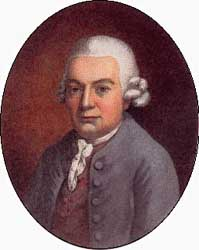

|  | Carl Philipp Emanuel Bach (1714-1788) Catalogue de l'oeuvre |
| Biographie | Oeuvre | Concordance des catalogues | Références |
| Oeuvre | Musique vocale
|
Il est possible d'entendre des extraits d'oeuvre (fichiers MIDI) en cliquant sur l'image suivante:  |
| Concordance des catalogues |
|
| Références |
|